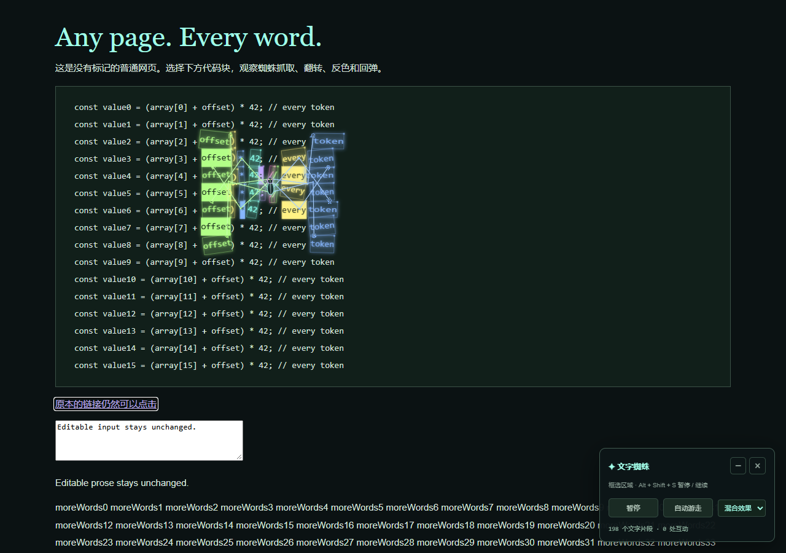
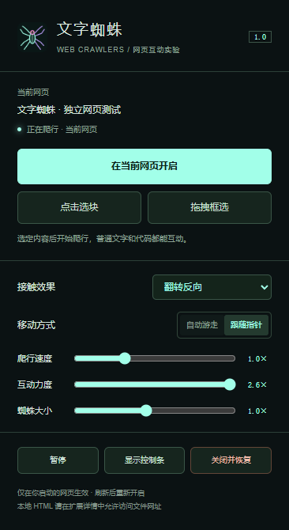

在 GitHub 下载并解压
点击上方“前往 GitHub 下载”，在仓库说明中点击“下载安装包”，再解压 ZIP。保留 web-crawler-extension 文件夹，里面应能看到 manifest.json。
让蜘蛛走进你选定的网页。
脚尖抓住文字，腿部扫过也能触发翻转、反色与回弹。装好扩展，打开自己的网页，就可以开始。

01 / INSTALL
电脑端 Chrome 或 Edge 浏览器
本版通过“加载已解压的扩展”安装。
点击上方“前往 GitHub 下载”，在仓库说明中点击“下载安装包”，再解压 ZIP。保留 web-crawler-extension 文件夹，里面应能看到 manifest.json。
复制对应地址，粘贴到浏览器地址栏打开，再开启“开发者模式”。
chrome://extensionsedge://extensions点击“加载已解压的扩展程序”，选择含有 manifest.json 的文件夹。安装后，把“文字蜘蛛”固定到浏览器工具栏。
请选择解压后的文件夹，解压目录需要保留。
浏览器官方说明：Chrome 安装指南 · Edge 安装指南
02 / USE
打开目标网页，点击工具栏里的蜘蛛图标，再选一种开启方式。
点击“在当前网页开启”，让蜘蛛在当前正文里的普通文字、标题、链接和代码上活动。
移动鼠标查看高亮范围，点击想要互动的段落、代码块或内容区。
按住鼠标画一个至少 100 × 100 像素的矩形，松开开始。选择过程中按 Esc 取消。
在弹窗中切换接触效果，调整速度、力度和大小。网页右下角的控制条可以暂停、跟随指针，以及关闭并恢复页面。
Alt + Shift + S 暂停 / 继续
Alt + Shift + X 关闭并恢复

03 / NOTES
可以。在扩展管理页进入“文字蜘蛛”的“详细信息”，开启“允许访问文件网址”，再用同一个浏览器打开本地 HTML 文件并启动扩展。
普通网页主页面中的文字和代码。浏览器设置页、扩展商店、内置 PDF 阅读器、图片或 Canvas 内的文字、跨域 iframe 和 Shadow DOM 内的内容不在本版范围内。输入框和可编辑区域会跳过；网页编辑器可选择阅读视图或预览区域。
点击“关闭并恢复”会撤销文字包装和动画样式。每个标签页分别运行；新标签页、刷新或跳转后，需要手动再次开启。部分结构复杂的动态网页可能需要刷新恢复，建议选择正文或阅读区域。
动画和文字互动在本机运行，不向服务器发送网页文字或截图。只有点击扩展后才访问你选定的网页；设置保存在本机浏览器中。